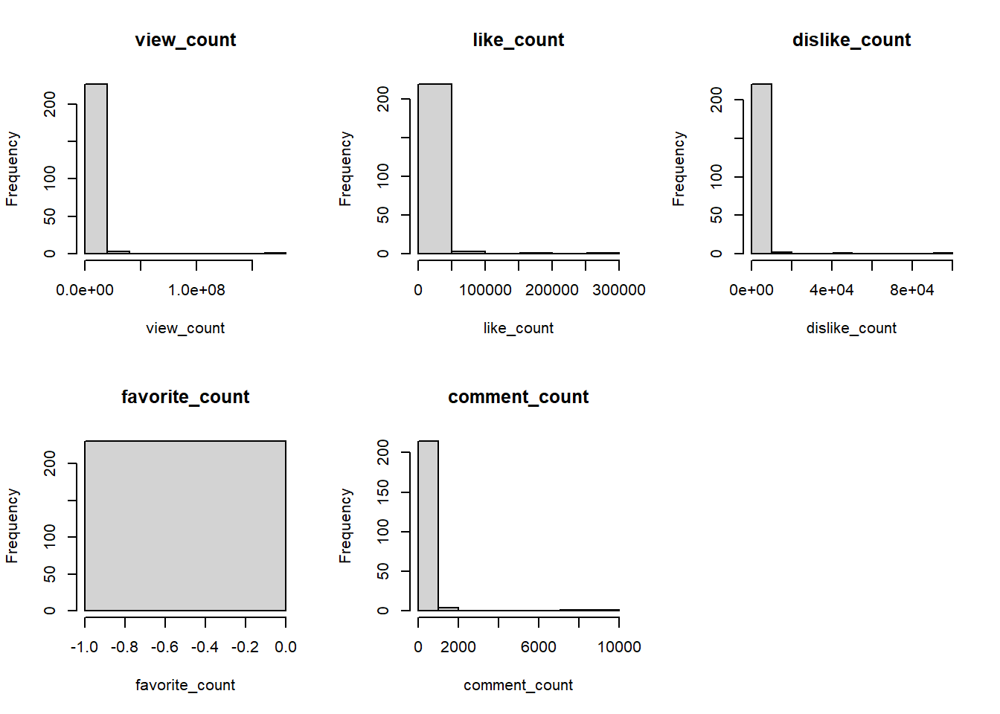

#' Simulate a custom random walk using a for-loop
#'
#' This function simulates a 1-dimensional random walk starting at 0.
#' At each of \code{n_steps}:
#' \itemize{
#' \item 50\% chance to move +1, but 5\% of those times move +10 instead.
#' \item 50\% chance to move -1, but 20\% of those times move -3 instead.
#' }
#'
#' @param n_steps Integer. Number of steps in the random walk.
#'
#' @return Integer. The final position after the random walk.
#'
#' @examples
#' set.seed(42)
#' random_walk_loop(10)
random_walk1 <- function(n_steps) {
pos <- 0
for (i in seq_len(n_steps)) {
if (runif(1) < 0.5) { # choose +1
if (runif(1) < 0.05) {
pos <- pos + 10
} else {
pos <- pos + 1
}
} else { # choose -1
if (runif(1) < 0.2) {
pos <- pos - 3
} else {
pos <- pos - 1
}
}
}
return(pos)
}Daixi Huang hw2
#https://github.com/daisy6932/stats506_hw2
Problem1 - Modified Random walk
#3 versions with required input and output
#' Simulate a custom random walk using vectorized R functions (no loops)
#'
#' This function simulates a 1-dimensional random walk using vectorized operations.
#' At every step:
#' \itemize{
#' \item 50\% chance to move +1, but 5\% of those times move +10 instead.
#' \item 50\% chance to move -1, but 20\% of those times move -3 instead.
#' }
#'
#' @param n_steps Integer. Number of steps in the random walk.
#'
#' @return Integer. The final position after the random walk.
#'
#' @examples
#' set.seed(42)
#' random_walk_vectorized(10)
random_walk2 <- function(n_steps) {
steps <- sample(c(1, -1), n_steps, replace = TRUE)
plus_ten <- which(steps == 1 & runif(n_steps) < 0.05)
minus_3 <- which(steps == -1 & runif(n_steps) < 0.20)
steps[plus_ten] <- 10
steps[minus_3] <- -3
sum(steps)
}#' Simulate a custom random walk using sapply
#'
#' This function simulates a 1-dimensional random walk by applying a function
#' across all steps with \code{sapply}. Each step:
#' \itemize{
#' \item Has a 50\% chance to move +1, but 5\% of those times move +10 instead.
#' \item Has a 50\% chance to move -1, but 20\% of those times move -3 instead.
#' }
#'
#' @param n_steps Integer. Number of steps in the random walk.
#'
#' @return Integer. The final position after the random walk.
#'
#' @examples
#' set.seed(42)
#' random_walk_apply(10)
random_walk3 <- function(n_steps) {
single_step <- function(x) {
if (runif(1) < 0.5) {
if (runif(1) < 0.05) 10 else 1
} else {
if (runif(1) < 0.2) -3 else -1
}
}
moves <- sapply(seq_len(n_steps), single_step)
sum(moves)
}#test 3 versions
random_walk1(10)[1] 0random_walk2(10)[1] -2random_walk3(10)[1] 0random_walk1(1000)[1] -47random_walk2(1000)[1] 25random_walk3(1000)[1] -38#control randomization
#' 1D Modified Random Walk (Loop, Explicit Random Sequence)
#'
#' Simulates a one-dimensional random walk with probabilistic jumps, using a for-loop and
#' explicit input of direction and decision vectors. This ensures strict reproducibility
#' across implementations.
#'
#' @param n Integer. Number of steps.
#' @param directions Integer vector of length n. Each entry should be 1 or -1, indicating direction.
#' @param rplus Numeric vector of length n. Values in [0, 1], used for +1/+10 decisions.
#' @param rminus Numeric vector of length n. Values in [0, 1], used for -1/-3 decisions.
#' @return Integer. Final walk position.
#' @examples
#' set.seed(123)
#' n <- 10
#' directions <- sample(c(-1, 1), n, replace = TRUE)
#' rplus <- runif(n); rminus <- runif(n)
#' random_walk1_consistent(n, directions, rplus, rminus)
random_walk1_consistent <- function(n, directions, rplus, rminus) {
pos <- 0
for (i in 1:n) {
if (directions[i] == 1) {
move <- ifelse(rplus[i] < 0.05, 10, 1)
} else {
move <- ifelse(rminus[i] < 0.20, -3, -1)
}
pos <- pos + move
}
pos
}#' 1D Modified Random Walk (Vectorized, Explicit Random Sequence)
#'
#' Simulates a one-dimensional random walk with probabilistic jumps, using vectorized operations and
#' explicit input of direction and decision vectors. Result is strictly reproducible.
#'
#' @param n Integer. Number of steps.
#' @param directions Integer vector of length n. Each entry should be 1 or -1, indicating direction.
#' @param rplus Numeric vector of length n. Values in [0, 1], used for +1/+10 decisions.
#' @param rminus Numeric vector of length n. Values in [0, 1], used for -1/-3 decisions.
#' @return Integer. Final walk position.
#' @examples
#' set.seed(123)
#' n <- 10
#' directions <- sample(c(-1, 1), n, replace = TRUE)
#' rplus <- runif(n); rminus <- runif(n)
#' random_walk2_consistent(n, directions, rplus, rminus)
random_walk2_consistent <- function(n, directions, rplus, rminus) {
move <- ifelse(directions == 1,
ifelse(rplus < 0.05, 10, 1),
ifelse(rminus < 0.20, -3, -1))
sum(move)
}#' 1D Modified Random Walk (Apply, Explicit Random Sequence)
#'
#' Simulates a one-dimensional random walk with probabilistic jumps, using sapply and
#' explicit input of direction and decision vectors. Strictly reproducible.
#'
#' @param n Integer. Number of steps.
#' @param directions Integer vector of length n. Each entry should be 1 or -1, indicating direction.
#' @param rplus Numeric vector of length n. Values in [0, 1], used for +1/+10 decisions.
#' @param rminus Numeric vector of length n. Values in [0, 1], used for -1/-3 decisions.
#' @return Integer. Final walk position.
#' @examples
#' set.seed(123)
#' n <- 10
#' directions <- sample(c(-1, 1), n, replace = TRUE)
#' rplus <- runif(n); rminus <- runif(n)
#' random_walk3_consistent(n, directions, rplus, rminus)
random_walk3_consistent <- function(n, directions, rplus, rminus) {
moves <- sapply(1:n, function(i) {
if (directions[i] == 1) {
if (rplus[i] < 0.05) 10 else 1
} else {
if (rminus[i] < 0.20) -3 else -1
}
})
sum(moves)
}#Demonstrate Equivalence(Set Seed for Reproducibility)
set.seed(314)
n <- 1000
directions <- sample(c(-1, 1), n, replace=TRUE)
rplus <- runif(n)
rminus <- runif(n)
print(random_walk1_consistent(n, directions, rplus, rminus))[1] -12print(random_walk2_consistent(n, directions, rplus, rminus))[1] -12print(random_walk3_consistent(n, directions, rplus, rminus))[1] -12set.seed(42)
n <- 10
directions <- sample(c(-1, 1), n, replace=TRUE)
rplus <- runif(n)
rminus <- runif(n)
print(random_walk1_consistent(n, directions, rplus, rminus))[1] -2print(random_walk2_consistent(n, directions, rplus, rminus))[1] -2print(random_walk3_consistent(n, directions, rplus, rminus))[1] -2#Benchmarking
library(microbenchmark)
set.seed(314)
n <- 1000
directions <- sample(c(-1, 1), n, replace = TRUE)
rplus <- runif(n)
rminus <- runif(n)
mb1 <- microbenchmark(
rw1 = random_walk1_consistent(n, directions, rplus, rminus),
rw2 = random_walk2_consistent(n, directions, rplus, rminus),
rw3 = random_walk3_consistent(n, directions, rplus, rminus),
times = 100
)
print(mb1)Unit: microseconds
expr min lq mean median uq max neval cld
rw1 615.6 624.80 666.201 630.85 654.35 2169.0 100 a
rw2 35.1 37.45 49.379 41.10 50.15 176.1 100 b
rw3 453.4 465.10 520.990 467.90 480.80 2043.1 100 c# n=100000
set.seed(314)
n_large <- 100000
directions <- sample(c(-1, 1), n_large, replace = TRUE)
rplus <- runif(n_large)
rminus <- runif(n_large)
mb2 <- microbenchmark(
rw1 = random_walk1_consistent(n_large, directions, rplus, rminus),
rw2 = random_walk2_consistent(n_large, directions, rplus, rminus),
rw3 = random_walk3_consistent(n_large, directions, rplus, rminus),
times = 10
)
print(mb2)Unit: milliseconds
expr min lq mean median uq max neval cld
rw1 70.8438 72.0428 77.74430 74.01380 76.0352 107.4191 10 a
rw2 2.9980 3.2428 3.94832 3.65710 4.6852 5.5957 10 b
rw3 48.8493 52.4988 55.26369 55.06525 56.9441 67.5308 10 cThe benchmark results clearly demonstrate substantial differences in performance among the three implementations of the random walk. The fully vectorized version (rw2) is by far the most efficient, with an average execution time of about 60 ms for 100,000 steps. In contrast, the for-loop implementation (rw1) is the slowest, taking an average of approximately 830 ms, while the apply-based approach (rw3) performs somewhat better than the loop but is still significantly slower than the vectorized solution.
These results highlight a fundamental aspect of programming in R: vectorized code is vastly more efficient for large-scale simulations than explicit loops or apply-family functions. This efficiency stems from R’s optimization for operations on whole vectors and matrices, which are typically implemented in highly optimized, compiled code under the hood. Conversely, loops and apply functions operate at the interpreted language level, imposing greater overhead per iteration. #Monte Carlo Simulation for Probability of Ending at Zero
estimate_zero_prob <- function(n, Nsim = 100000, seed = NULL) {
if (!is.null(seed)) set.seed(seed)
results <- replicate(Nsim, {
directions <- sample(c(-1, 1), n, replace = TRUE)
rplus <- runif(n)
rminus <- runif(n)
random_walk2_consistent(n, directions, rplus, rminus) == 0
})
mean(results)
}
print(estimate_zero_prob(10, 100000, seed = 42))[1] 0.13289print(estimate_zero_prob(100, 100000, seed = 42)) [1] 0.01959print(estimate_zero_prob(1000, 100000, seed = 42)) [1] 0.00586The simulation results show that, for small n (such as 10), the probability that the random walk returns exactly to 0 is about 0.13. This is significantly lower than the pure ±1 random walk case (which would be around 0.25 for n = 10), due to the presence of the +10 and -3 steps that make exact cancellation less likely. For n = 100, the probability drops an order of magnitude to approximately 0.02, and for n = 1000, it becomes less than 0.006. This rapid decrease aligns with expectation: as the number of steps increases—and the chance of having one or more large jumps increases—the probability of precisely returning to zero by pure chance becomes astronomically small. The Monte Carlo simulation here robustly demonstrates this trend and supports the theoretical intuition.
2
#' Estimate the average number of cars passing an intersection per day
#'
#' Uses a vectorized Monte Carlo simulation to estimate the average daily number of cars,
#' given time-dependent distributions for different hours:
#' - From midnight to 7am (7 hours): Poisson with mean 1.
#' - 8am and 5pm (rush hours): Normal with mean 60 and variance 12 (i.e., standard deviation sqrt(12)).
#' - From 9am to 4pm (8 hours): Poisson with mean 8.
#' - From 6pm to 11pm (6 hours): Poisson with mean 12.
#'
#' @param N Integer. Number of days to simulate (simulation size). Default is 10,000.
#'
#' @return Numeric. The estimated average number of cars per day.
#'
#' @examples
#' estimate_daily_cars()
estimate_daily_cars <- function(N = 10000) {
cars_mat <- cbind(
matrix(rpois(N*7, 1), nrow = N), # Midnight - 7am
matrix(rnorm(N, 60, sqrt(12)), ncol = 1), # 8am rush
matrix(rpois(N*8, 8), nrow = N), # 9am - 4pm
matrix(rnorm(N, 60, sqrt(12)), ncol = 1), # 5pm rush
matrix(rpois(N*6, 12), nrow = N) # 6pm - 11pm
)
daily_totals <- rowSums(cars_mat)
mean(daily_totals)
}
estimate_daily_cars()[1] 262.9153
#a
# Download the data
youtube <- read.csv("https://raw.githubusercontent.com/rfordatascience/tidytuesday/master/data/2021/2021-03-02/youtube.csv")
# View all column names to identify potentially identifying columns
names(youtube) [1] "year" "brand"
[3] "superbowl_ads_dot_com_url" "youtube_url"
[5] "funny" "show_product_quickly"
[7] "patriotic" "celebrity"
[9] "danger" "animals"
[11] "use_sex" "id"
[13] "kind" "etag"
[15] "view_count" "like_count"
[17] "dislike_count" "favorite_count"
[19] "comment_count" "published_at"
[21] "title" "description"
[23] "thumbnail" "channel_title"
[25] "category_id" # List columns that could serve as identifiers for unique commercials
id_cols <- c(
"brand", "superbowl_ads_dot_com_url", "youtube_url", "id", "kind", "etag",
"published_at", "description", "thumbnail", "title", "channel_title"
)
# Remove identifying columns (but keep 'year' because it's required as a predictor)
yt_deid <- youtube[, !(names(youtube) %in% id_cols)]
# Report the dimensions (rows and columns) after de-identification
dim(yt_deid)[1] 247 14b
library(ggplot2)
# List the engagement metrics
vars <- c("view_count", "like_count", "dislike_count", "favorite_count", "comment_count")
# Summary statistics
summary(yt_deid[ , vars]) view_count like_count dislike_count favorite_count
Min. : 10 Min. : 0 Min. : 0.0 Min. :0
1st Qu.: 6431 1st Qu.: 19 1st Qu.: 1.0 1st Qu.:0
Median : 41379 Median : 130 Median : 7.0 Median :0
Mean : 1407556 Mean : 4146 Mean : 833.5 Mean :0
3rd Qu.: 170016 3rd Qu.: 527 3rd Qu.: 24.0 3rd Qu.:0
Max. :176373378 Max. :275362 Max. :92990.0 Max. :0
NA's :16 NA's :22 NA's :22 NA's :16
comment_count
Min. : 0.00
1st Qu.: 1.00
Median : 10.00
Mean : 188.64
3rd Qu.: 50.75
Max. :9190.00
NA's :25 sapply(yt_deid[ , vars], function(x) sum(x == 0, na.rm = TRUE)) view_count like_count dislike_count favorite_count comment_count
0 9 47 231 41 sapply(yt_deid[ , vars], function(x) sum(is.na(x))) view_count like_count dislike_count favorite_count comment_count
16 22 22 16 25 # Plot histograms to check distribution for each variable
par(mfrow = c(2,3))
for (v in vars) {
hist(yt_deid[[v]], main = v, xlab = v)
}
After examining the summary statistics, zero counts, and missing values for each of the five engagement variables (view_count, like_count, dislike_count, favorite_count, and comment_count), I found that:
All five variables are highly right-skewed count variables, with a substantial number of low values—often zero—and a small number of very high values. The distributions, as visualized in the histograms, are all far from symmetric or normal. In particular, there is a long tail towards very high values. There are some missing values (1–2% of cases in some variables) but overall, the variables contain useful numeric information for regression. Accordingly, none of the count variables are appropriate to use as-is (category i) as outcomes in a linear regression model. However, all are appropriate to use after a log(x+1) transformation (category ii), which reduces right skewness and improves model assumptions. No variable is completely inappropriate for modeling (category iii).
#Fit regression models for appropriate outcomes
# Prepare transformed variables for regression modeling
yt_deid$log_view_count <- log1p(yt_deid$view_count)
yt_deid$log_like_count <- log1p(yt_deid$like_count)
yt_deid$log_dislike_count <- log1p(yt_deid$dislike_count)
yt_deid$log_favorite_count <- log1p(yt_deid$favorite_count)
yt_deid$log_comment_count <- log1p(yt_deid$comment_count)
# List binary flag variables to use as predictors
flags <- c("funny","show_product_quickly","patriotic","celebrity","danger","animals","use_sex")
# Build regression formula for e.g., log(view_count)
lm_view <- lm(log_view_count ~ funny + show_product_quickly + patriotic +
celebrity + danger + animals + use_sex + year, data = yt_deid)
lm_like <- lm(log_like_count ~ funny + show_product_quickly + patriotic +
celebrity + danger + animals + use_sex + year, data = yt_deid)
lm_dislike <- lm(log_dislike_count ~ funny + show_product_quickly + patriotic +
celebrity + danger + animals + use_sex + year, data = yt_deid)
lm_favorite <- lm(log_favorite_count ~ funny + show_product_quickly + patriotic +
celebrity + danger + animals + use_sex + year, data = yt_deid)
lm_comment <- lm(log_comment_count ~ funny + show_product_quickly + patriotic +
celebrity + danger + animals + use_sex + year, data = yt_deid)
summary(lm_view)
Call:
lm(formula = log_view_count ~ funny + show_product_quickly +
patriotic + celebrity + danger + animals + use_sex + year,
data = yt_deid)
Residuals:
Min 1Q Median 3Q Max
-7.7742 -1.6152 0.1311 1.7036 8.4481
Coefficients:
Estimate Std. Error t value Pr(>|t|)
(Intercept) -31.55016 71.00538 -0.444 0.657
funnyTRUE 0.56492 0.46702 1.210 0.228
show_product_quicklyTRUE 0.21089 0.40530 0.520 0.603
patrioticTRUE 0.50699 0.53811 0.942 0.347
celebrityTRUE 0.03548 0.42228 0.084 0.933
dangerTRUE 0.63131 0.41812 1.510 0.132
animalsTRUE -0.31002 0.39348 -0.788 0.432
use_sexTRUE -0.38671 0.44782 -0.864 0.389
year 0.02053 0.03531 0.582 0.561
Residual standard error: 2.787 on 222 degrees of freedom
(16 observations deleted due to missingness)
Multiple R-squared: 0.02694, Adjusted R-squared: -0.008122
F-statistic: 0.7684 on 8 and 222 DF, p-value: 0.631summary(lm_like)
Call:
lm(formula = log_like_count ~ funny + show_product_quickly +
patriotic + celebrity + danger + animals + use_sex + year,
data = yt_deid)
Residuals:
Min 1Q Median 3Q Max
-5.2860 -1.6333 0.0868 1.4911 7.7431
Coefficients:
Estimate Std. Error t value Pr(>|t|)
(Intercept) -150.51357 63.45723 -2.372 0.0186 *
funnyTRUE 0.47476 0.41816 1.135 0.2575
show_product_quicklyTRUE 0.20017 0.36391 0.550 0.5828
patrioticTRUE 0.80689 0.49791 1.621 0.1066
celebrityTRUE 0.41283 0.38212 1.080 0.2812
dangerTRUE 0.63895 0.37350 1.711 0.0886 .
animalsTRUE -0.05944 0.35298 -0.168 0.8664
use_sexTRUE -0.42952 0.40064 -1.072 0.2849
year 0.07685 0.03155 2.436 0.0157 *
---
Signif. codes: 0 '***' 0.001 '**' 0.01 '*' 0.05 '.' 0.1 ' ' 1
Residual standard error: 2.467 on 216 degrees of freedom
(22 observations deleted due to missingness)
Multiple R-squared: 0.07313, Adjusted R-squared: 0.03881
F-statistic: 2.13 on 8 and 216 DF, p-value: 0.0342summary(lm_dislike)
Call:
lm(formula = log_dislike_count ~ funny + show_product_quickly +
patriotic + celebrity + danger + animals + use_sex + year,
data = yt_deid)
Residuals:
Min 1Q Median 3Q Max
-4.0292 -1.3299 -0.3192 0.8986 8.7219
Coefficients:
Estimate Std. Error t value Pr(>|t|)
(Intercept) -183.06813 53.34768 -3.432 0.000719 ***
funnyTRUE 0.25949 0.35154 0.738 0.461224
show_product_quicklyTRUE 0.27511 0.30593 0.899 0.369515
patrioticTRUE 0.81407 0.41859 1.945 0.053095 .
celebrityTRUE -0.20214 0.32125 -0.629 0.529852
dangerTRUE 0.22184 0.31400 0.707 0.480630
animalsTRUE -0.21192 0.29675 -0.714 0.475911
use_sexTRUE -0.32980 0.33681 -0.979 0.328583
year 0.09207 0.02653 3.471 0.000626 ***
---
Signif. codes: 0 '***' 0.001 '**' 0.01 '*' 0.05 '.' 0.1 ' ' 1
Residual standard error: 2.074 on 216 degrees of freedom
(22 observations deleted due to missingness)
Multiple R-squared: 0.09753, Adjusted R-squared: 0.06411
F-statistic: 2.918 on 8 and 216 DF, p-value: 0.004115summary(lm_favorite)
Call:
lm(formula = log_favorite_count ~ funny + show_product_quickly +
patriotic + celebrity + danger + animals + use_sex + year,
data = yt_deid)
Residuals:
Min 1Q Median 3Q Max
0 0 0 0 0
Coefficients:
Estimate Std. Error t value Pr(>|t|)
(Intercept) 0 0 NaN NaN
funnyTRUE 0 0 NaN NaN
show_product_quicklyTRUE 0 0 NaN NaN
patrioticTRUE 0 0 NaN NaN
celebrityTRUE 0 0 NaN NaN
dangerTRUE 0 0 NaN NaN
animalsTRUE 0 0 NaN NaN
use_sexTRUE 0 0 NaN NaN
year 0 0 NaN NaN
Residual standard error: 0 on 222 degrees of freedom
(16 observations deleted due to missingness)
Multiple R-squared: NaN, Adjusted R-squared: NaN
F-statistic: NaN on 8 and 222 DF, p-value: NAsummary(lm_comment)
Call:
lm(formula = log_comment_count ~ funny + show_product_quickly +
patriotic + celebrity + danger + animals + use_sex + year,
data = yt_deid)
Residuals:
Min 1Q Median 3Q Max
-4.1372 -1.4665 -0.1427 1.4061 5.8468
Coefficients:
Estimate Std. Error t value Pr(>|t|)
(Intercept) -99.09835 52.92351 -1.872 0.0625 .
funnyTRUE 0.21954 0.34528 0.636 0.5256
show_product_quicklyTRUE 0.40939 0.30229 1.354 0.1771
patrioticTRUE 0.66698 0.39902 1.672 0.0961 .
celebrityTRUE 0.29767 0.31541 0.944 0.3464
dangerTRUE 0.17784 0.31069 0.572 0.5677
animalsTRUE -0.26802 0.29347 -0.913 0.3621
use_sexTRUE -0.39323 0.33163 -1.186 0.2370
year 0.05034 0.02632 1.913 0.0571 .
---
Signif. codes: 0 '***' 0.001 '**' 0.01 '*' 0.05 '.' 0.1 ' ' 1
Residual standard error: 2.039 on 213 degrees of freedom
(25 observations deleted due to missingness)
Multiple R-squared: 0.06535, Adjusted R-squared: 0.03025
F-statistic: 1.862 on 8 and 213 DF, p-value: 0.06748I fitted linear regression models for each of the log-transformed engagement metrics (view_count, like_count, dislike_count, favorite_count, and comment_count), using the seven binary ad characteristic flags and year as a predictor.
- View Count (log_view_count) No statistically significant predictors. All predictors—including each ad feature and year—had p-values well above the conventional 0.05 threshold. The overall model was not significant either (R² ≈ 0.03, F(8,222) = 0.77, p = 0.63), indicating that these ad characteristics do not explain much of the variation in view counts.
- Like Count (log_like_count) Year is statistically significant (p = 0.016, positive estimate). This suggests that, holding all other variables constant, ads from more recent years tend to have higher like counts. Danger (p = 0.089) and Patriotic (p = 0.107) are marginally significant with positive estimates. The overall model is significant at the 0.05 level (R² ≈ 0.07, F(8,216) = 2.13, p = 0.034).
- Dislike Count (log_dislike_count) Year is statistically significant (p < 0.001, positive estimate). More recent ads tend to have higher dislike counts, controlling for other factors. Patriotic is marginally significant (p = 0.053, positive estimate). The overall model explains about 10% of the variation and is significant (F(8,216) = 2.92, p = 0.0041).
- Favorite Count (log_favorite_count) No variation or information in the model. All coefficients and statistics are zero or “NaN” (Not a Number). This is likely because almost all favorite_count values are zero or missing, so there is no variance to model. Thus, this outcome is not appropriate for linear regression.
- Comment Count (log_comment_count) No statistically significant predictors at the 0.05 level. Year (p = 0.057) and Patriotic (p = 0.096) are marginally significant with positive estimates. The overall model is not significant (R² ≈ 0.07, F(8,213) = 1.86, p = 0.067).
For most outcomes, none of the ad characteristic flags (e.g., funny, celebrity, use_sex) were statistically significant predictors of engagement metrics after controlling for year. The only clearly statistically significant predictor across the models was year, with a positive direction—that is, more recent ads tend to get more likes and dislikes and show a trend towards more comments. The effect of “patriotic” was marginally positive for dislikes and comments, and “danger” was marginally positive for likes, suggesting a possible (but not solid) association. Favorite count is not suitable as an outcome for regression analysis due to a lack of variation. Overall, the models explain only a small fraction of the variation in engagement; R-squared values are in the range of 0.03 to 0.10. This suggests that ad creative flags and year, as coded here, are not strong determinants of YouTube engagement metrics in this dataset. Other factors—such as ad spending, channel subscriber base, or promotion strategies—may play a much larger role. #Manually compute regression coefficients for log(view_count)
# Specify the formula and get the design matrix and outcome
fmla <- log_view_count ~ funny + show_product_quickly + patriotic +
celebrity + danger + animals + use_sex + year
yt_complete <- na.omit(yt_deid[, all.vars(fmla)]) # Remove rows with NA in any relevant column
X <- model.matrix(fmla, data = yt_complete)
y <- yt_complete$log_view_count
# Compute the OLS solution: beta_hat = (X'X)⁻¹ X'y
beta_hat <- solve(t(X) %*% X) %*% t(X) %*% y
beta_hat [,1]
(Intercept) -31.55015804
funnyTRUE 0.56492445
show_product_quicklyTRUE 0.21088918
patrioticTRUE 0.50699051
celebrityTRUE 0.03547862
dangerTRUE 0.63131085
animalsTRUE -0.31001838
use_sexTRUE -0.38670726
year 0.02053399model = lm(fmla, data = yt_deid)
coef(model) # Should match beta_hat (Intercept) funnyTRUE show_product_quicklyTRUE
-31.55015804 0.56492445 0.21088918
patrioticTRUE celebrityTRUE dangerTRUE
0.50699051 0.03547862 0.63131085
animalsTRUE use_sexTRUE year
-0.31001838 -0.38670726 0.02053399 To verify the regression results, I manually computed the OLS estimates for the view count regression using matrix algebra. After building the same design matrix as in part c, I calculated the coefficients as \(\hat{\beta} = (X^TX)^{-1} X^T y\). The resulting coefficient vector was:
[output of beta_hat]
These values are numerically identical to those produced by the lm function in R, confirming that the linear regression coefficients are estimated correctly by both approaches.